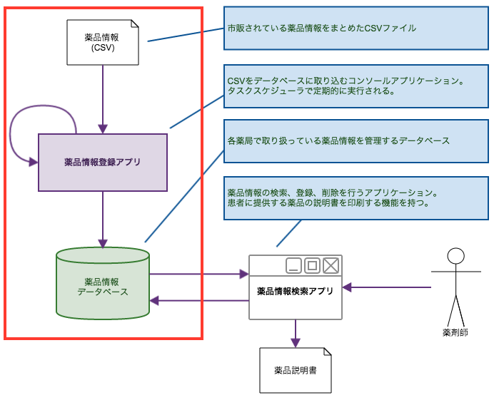

.NET Framework アプリケーション開発入門
.NET Frameworkを使用したクライアント アプリケーションの開発方法について解説します。
環境について
- OS: Windows 10
- IDE: Visual Studio 2015
- DB: SQL Server LocalDB (Visual Studio2015インストール時に合わせてインストールしてください)
- その他: Office 2010
サンプル・アプリケーションのイメージ図
薬局内のPCにインストールされる「薬品情報管理システム」を題材とします。

各薬局には一般に流通している薬品情報がCSV形式で定期的 (1日1回) に配信されるものとします。
薬局内のPCでは、「薬品情報登録アプリ」が定期的に実行され、
配信されたCSVをそのPC内で稼働しているSQL Serverの特定テーブルに取り込みます。
薬剤師は「薬品情報検索アプリ」を使用して、取り込まれたデータを検索します。
CSVに登録されていないがその薬局で取り扱っている薬品情報は、薬剤師が「薬品情報検索アプリ」を使用して登録します。
また、登録したデータは変更、削除が可能です。
(CSVから登録された薬品は編集不可とします)
「薬品情報検索アプリ」は、薬局に来られたお客様にお渡しする「薬品説明書」を印刷する機能を持つものとします。
1. .NET Frameworkの概要と簡単なコンソールアプリケーションの開発
GUIのないコンソールアプリケーションの作成を通して、Entity Frameworkを使用したデータベースのデータ登録、参照、更新、削除の操作について解説します。
(1) .NET Frameworkの概要
参考: 第1回 Visual Studio 2015って何ができるの？ (1/6)
- .NET Frameworkの概要
- Visual Studio 2015の機能
- 開発できるアプリケーションの種類
(2) Entity Frameworkによるデータベース操作
- 参考

CSVファイルを取り込み、SQL Serverに取り込むアプリケーションを作成します。
- データの準備
- CSVファイル
- データベース
- コンソールアプリケーション プロジェクトの作成
- Entity Frameworkの概要
- ORマッパーとは
- Entity Frameworkのインストール
- EDMの作成
- POCOの作成
- Entity Frameworkでのデータ保存、取得
- CSVファイルの読み込み
- DB登録
- 動作確認
2. Windowsフォームアプリケーションの開発
- 参考

SQL Serverの検索、登録、更新、削除を行うアプリケーションを作成します。
- Windowsフォームアプリケーション プロジェクトの作成
- Entity Frameworkのインストール
- EDMの作成
- POCOの作成
- 検索処理の実装
- イベント処理の実装
- LINQによるデータ操作
- 更新処理の実装
- フォームの追加
- Entity Frameworkでのデータ更新、削除
- Officeファイルの扱い
- EPPlusによるExcelファイルの作成
- Excelファイルの更新
- 印刷処理
- 動作確認
3. マルチスレッド対応

CSV取り込み時に進捗状況を表示するインターフェースを用意します。
取り込み処理中もアプリケーションが固まらないように、CSV読み込み・データ登録処理をバックグラウンドのスレッドで実行します。
- Windowsフォームアプリケーション プロジェクトの作成
- コントロールの配置、イベント処理の実装
- CSVファイルの読み込み
- フォルダ内のファイル一覧を取得
- ファイルの操作
- CSVファイルの読み込み処理の実装
- DB更新処理の実装
- Entity Frameworkのインストール
- EDMの作成
- POCOの作成
- DB登録
- マルチスレッド対応 - BackgroundWorker コンポーネントでのマルチスレッド
- 動作確認